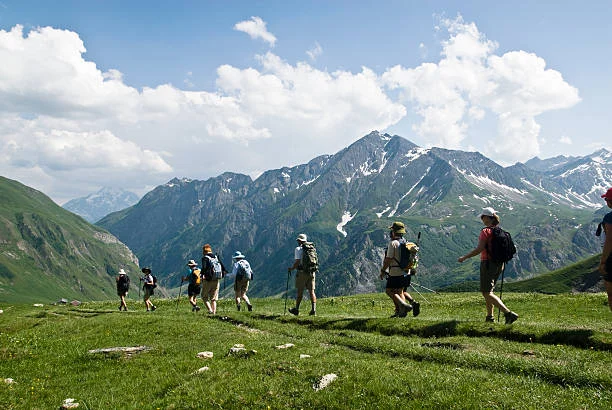
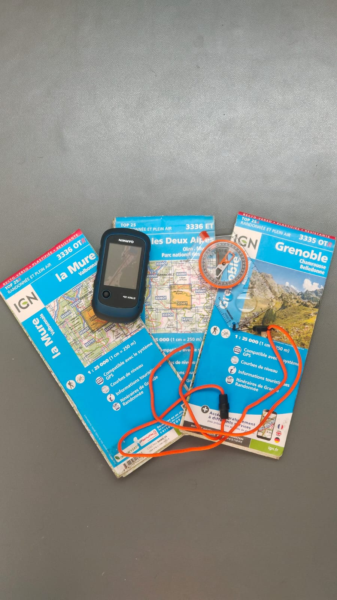

Plan d’entraînement : Construction d’un plan adapté : niveau actuel, disponibilité, objectif et échéance.
progression
Préparation à un trek de 4 jours en montagne Quel que soit votre niveau actuel, mettez en place une routine simple et efficace pour être prêt physiquement le jour J. Découvrir la préparationUne journée pour devenir autonome, confiant et efficace en montagne.
orientation · cartographie
Formation à la lecture de cartes et à l’orientation Apprenez à lire une carte, l’orienter, interpréter le relief et faire le lien entre la carte et le terrain réel. Découvrir la formationTechniques
terrainTechnique de marche en montagne · marche nordique · marche « afghane » · raquettes.
Envie d’en parler ?
contactDonnez-moi votre objectif et votre horizon (date), et on construit un plan réaliste.